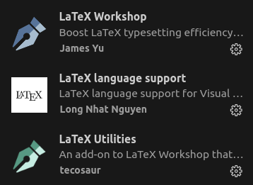

在 Ubuntu22.04 下使用 vscode 编写 latex 文档，并配置编译、格式化。
相关概念介绍
TeX 生态系统中有许多概念容易混淆，以下做一个简要介绍：
TeX：
TeX 是一种由 Donald E. Knuth 开发的排版系统，主要用于生成数学、科学技术文档的高质量排版。TeX 是整个系统的基础，它提供了底层的编程语言和处理逻辑。
LaTeX：
LaTeX 是 Leslie Lamport 开发的基于 TeX 的排版系统。它提供了一套宏，使得作者可以更容易地排版高质量的文档，尤其是复杂的数学公式。LaTeX 相对于 TeX，使用更高层次的结构化命令，使得文档的编写更加简单和清晰。
pdfLaTeX：
pdfLaTeX 是 LaTeX 的一个扩展，允许直接生成 PDF 文件，而不是传统的 DVI（DeVice Independent file format）。这种格式直接支持现代数字和网络文档的需求，如嵌入字体和系统无关的图像。
XeLaTeX：
XeLaTeX 是 LaTeX 的另一个扩展。XeTeX 是对 TeX 引擎的扩展，它支持 Unicode 和现代字体技术（如 OpenType）。XeLaTeX 特别适合处理多语言文档，并能更好地处理各种字体，包括直接使用系统字体。
TeX Live：
TeX Live 是一个广泛使用的 TeX 发行版，包含了 TeX, LaTeX, XeTeX, pdfLaTeX 等多种工具和大量的宏包。它是一个跨平台的发行版，可以在 Windows, Mac OS X 和 Linux 等操作系统上安装和使用。
总结一下，TeX 是基础，LaTeX 在 TeX 的基础上提供了更高级的宏来简化文档的排版。XeLaTeX 和 pdfLaTeX 是 LaTeX 的扩展，提供了对现代文档格式和技术（如 PDF, Unicode, OpenType 等）的支持。TeX Live 是包含这些工具的一个完整发行版，可以方便地安装和管理这些工具和宏包。
安装 TeX Live
直接从 CTAN 下载 TeX Live 比较慢，建议根据自己情况选择国内镜像源下载，以下给出两个镜像源：
下载 texlive2024.iso ，可以直接使用浏览器下载，也可以获取下载链接后使用 wget 或 aria2c 进行下载。此处我选择使用 aria2c 从兰大镜像源下载：
1 | aria2c https://mirror.lzu.edu.cn/CTAN/systems/texlive/Images/ |
输出如下：
1 | xietao@ws:~/Downloads$ aria2c https://mirror.lzu.edu.cn/CTAN/systems/texlive/Images/texlive2024.iso |
进入下载目录，双击 texlive2024.iso 文件进行挂载，然后在挂载目录下打开终端进行安装：
1 | sudo perl ./install-tl --no-interaction |
安装结束后会输出提示：
1 | Add /usr/local/texlive/2024/texmf-dist/doc/man to MANPATH. |
根据提示添加一下环境变量：
1 | sudo vim ~/.bashrc |
在文件末尾添加内容：
1 | # texlive 配置 |
重启终端，或者执行代码以加载新的配置：
1 | source ~/.bashrc |
查看是否安装成功：
1 | tex --version |
若输出以下内容，则 TeX Live 安装成功；否则，尝试注销或重启后重试。
1 | xietao@ws:~$ tex --version |
安装相关依赖
在终端中执行以下命令：
1 | sudo apt-get install texlive-latex-extra |
安装 windows 字体
在windows系统下，进入系统盘，打开目录 windows/fonts/ ，把需要的字体文件拷贝至新的文件夹，并将该文件夹放入 Ubuntu 的 /usr/share/fonts/ 下。
1 | sudo mkdir /usr/share/fonts/winfonts |
接下来建立字体缓存：
1 | cd /usr/share/fonts/winfonts |
注销或重启后查看结果：
1 | sudo reboot |
配置 vscode
打开 vscode 后，按 ctrl+shift+x 进入拓展商店，搜索 latex ，安装以下三个插件：

安装完成后，按 ctrl+shift+p 打开快捷访问面板，输入 打开工作区设置(JSON) 并选择。打开 ./.vscode/settings.json 后，输入以下内容：
1 | { |
编译 tex 文件
打开 .tex 文件后，在 vscode 左侧 latex 窗口可以进行编译，也可以通过快捷键 F5 快速编译。注意，请选择你需要的编译方式，比如 Recipe: xe->bib->xe(double) 。
编译完成后，会生成对应的 pdf 文件。
配置 latex formatter
打开终端，执行以下命令：
1 | sudo cpan Log::Log4perl |
执行完成后，在 vscode 中配置格式化方式：
- 在
.tex类型的文件编辑器窗口中右键 - 选择
使用...格式化文档 - 在弹出窗口中选择
LaTeX Workshop
至此，每次保存文件时，vscode 会自动对 tex 文档进行 格式化 和 编译。